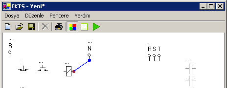
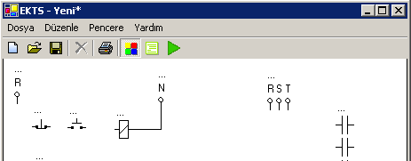

[prew] [next]
Devre Bağlantıları
Bağlantı Oluşturmak
Bağlantı oluşturmak için:
- Elemanın bağlantı ucuna fare imlecini kırmızı yuvarlak nokta gözükene kadar yaklaştırın.
- Gözüken kırmızı yuvarlağın içinde farenin sol tuşuna basarak fare imlecini bağlantı yapmak istediğiniz diğer noktaya götürün.
- Diğer elemanın bağlantı ucuna, veya başka bağlantı çizgisine, veya da düğüm noktasına, Şekil 7'de gösterildiği gibi, fare imlecini mavi yuvarlak nokta gözükene kadar yaklaştırınız.
- Gözüken mavi noktanın üzerinde basılı olan farenin sol tuşunu bırakın.
- Şekil 8'de gösterdiği gibi bağlantı çizgisi oluşur.

Şekil 7 EKTS'de Elemanlar Arasında Bağlantı Oluşturulurken Gözüken Şekiller.

Şekil 8 EKTS'de İki Eleman Arasındaki Bağlantının Oluşturulmuş Hali.
Bağlantı Çizgisini Kaydırmak
Bağlantı çizgisini kayırmak için bağlantı çizgisine farenin sol tuşu ile basılı tutarak, islenilen konuma kaydırınız. Bağlantı çizgileri yatay veya dikey kaydırılabilirler.
Bağlantı Çizgisini Silmek
Bağlantı çizgisini silmek için:
- Farenin sol tuşuyla silmek istediğiniz bağlantı çizgisini seçiniz. Seçilen bağlantı çizgisi kırmızı ile belirecektir.
- Araç çubuğundan Sil düğmesine tıklayın veya klavyeden “Delete” tuşuna basınız.